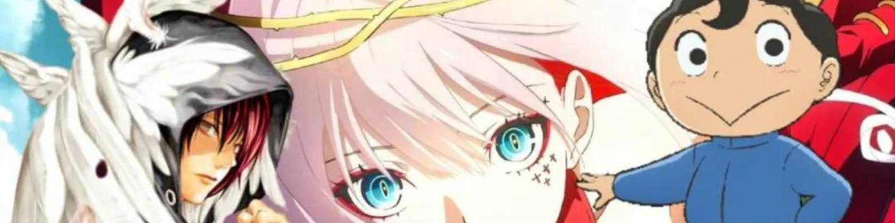
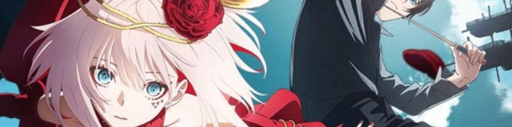
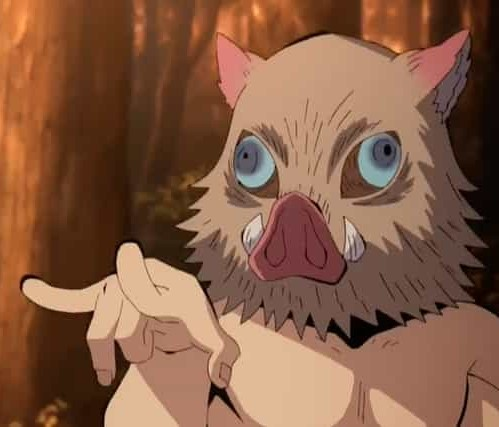
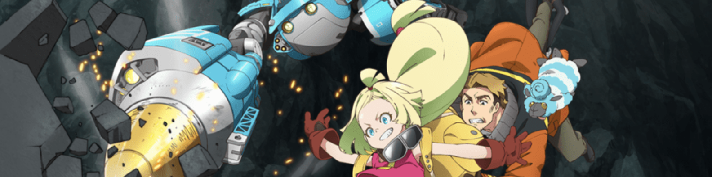
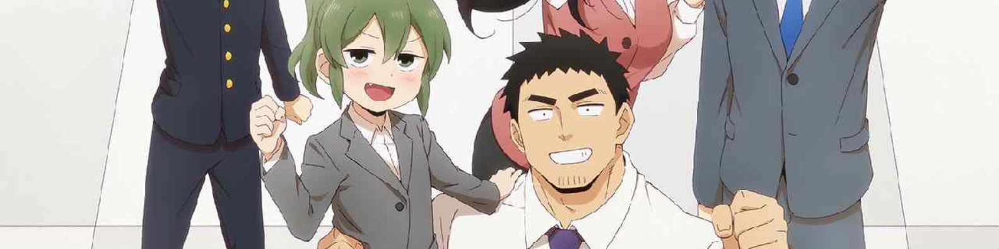
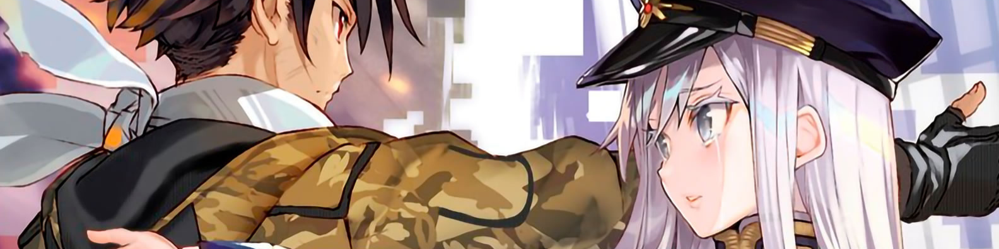
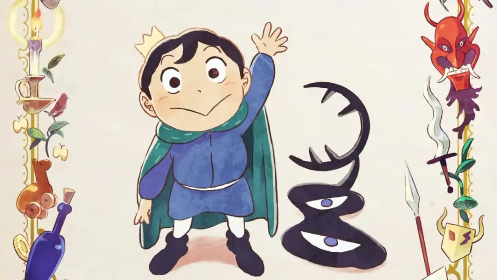

Anime de otoño 2021: esto es lo que veremos
Osama Ranking, segundas temporadas y nuevas sorpresas.

La temporada de otroño 2021 nos ha traido grandes sorpresas y segundas temporadas que estabamos esperando. En esta ocasión con Gonpachiro les vamos a contar cuales son los que mas nos estan gustando. Empecemos!
Takt: Op. Destiny

Gonpachiro

La combinacion de la musica y las escenas de accion, acompañados por personajes muy bien logrados y una buena animación, han hecho que quiera seguir viendo este anime por el resto de la temporada.
Coki
No esperaba mucho de este anime, pero me sorprendio mucho lo bien logrado que esta y su reparto de actores de voz
Sakugan

Gonpachiro
La forma en la que plantean la relacion entre los personajes y su entretenida historia lo hacen un anime para ver si o si.
Coki
Recuerda mucho a otros anime como Gurren Lagann, su tematica mecha con el desconocimiento del exterior y unos protagonistas que dan gusto de ver.
Senpai ga Uzai Kōhai no Hanashi

Gonpachiro
Aunque sea bastante parecido a otros del mismo genero, sigue siendo muy divertido de ver.
Coki
Slice of life de la temporada, ver como los personajes de Futaba y Takeda se vuelven mas cercanos recuerda mucho a otros como Kaguya-sama Love is War.
86: Eighty-Six

Esperabamos mucho la continuacion de 86, sigue siendo igual de emocionantey cargado de suspenso y drama. Un drama militar que muestra como por le beneficio de unos pocos una nacion esta dispuesta a sacrificar a aquellos que consideran menos.
Ōsama Ranking

Nuestro favorito indiscutido de la temporada. Desde el diseño de personajes, animacion, voces e historia, todos los elementos de este anime nos hacen amarlo. Bojji nos demuestra que su bondad y su conviccion lo llevaran a ser el mejor rey al igual que su padre. Aun quedan por revelar muchos secretos de la trama pero ya lo amamos y esperamos ver mas de nuestro principe favorito.